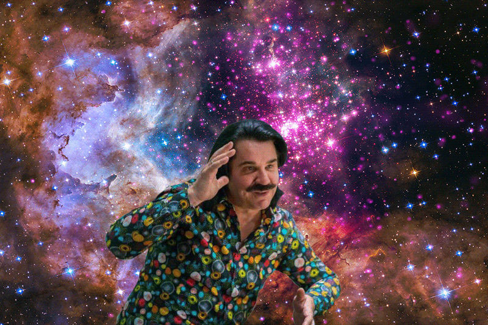
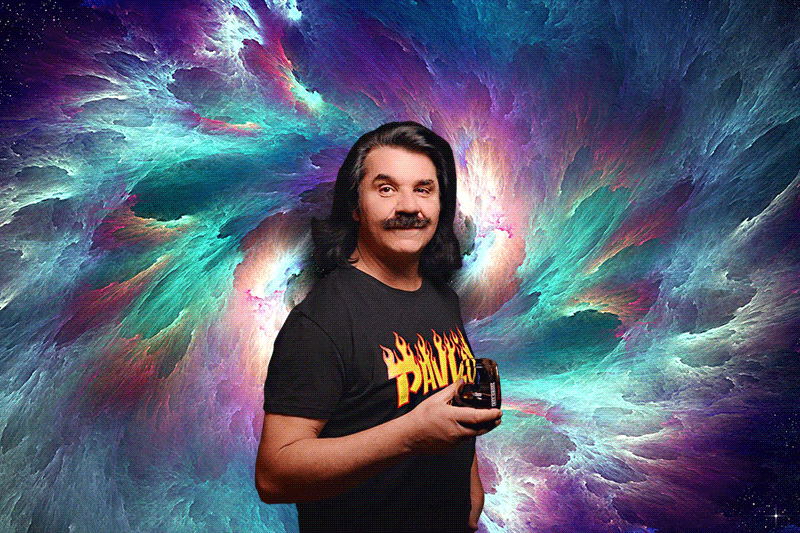

Павло Зібров – зірка української естради, улюбленець жінок і володар найефектніших вусів на нашій сцені. Не пропусти можливість пoбачити кумира на площі свого універу. Абсолютно безкоштовно, приходь і захопи друзів, адже це подія яку не можна пропустити.
Своїми «фішками» Павло Зібров називає вуса, лозунг «Мертві бджоли не гудуть», а також те, що є головою Громадської Партії Шанувальників Жінок України. «Це дуже величезна відповідальність», — говорить співак. Піснею, яка подарувала Зіброву всеукраїнську популярність, артист називає Хрещатик, приходь і почуй вживу виконання відомого на всю Україну хіта!


Lykhach Oleksandr ®
Kyiv 2018 "KPI"
Хочеш побачити кита українського шоубізу в своєму місті? Переходь на офіційний сайт.